Module 04 — Exploiter Outlook et savoir le dépanner¶
La transcription du support Drive et l’aide pédagogique sont séparées pour rendre leur provenance explicite.
SOURCE DRIVE · TRANSCRIPTION DU SUPPORT
Le contenu des documents du dossier TSSR est transcrit ci-dessous, page par page. Les textes et tableaux sont intégrés à la page Web. Aucun fichier PDF, aucune diapositive entière ni aucune reproduction de page n’est affiché. Seuls des croquis ou visuels isolés et vérifiés peuvent accompagner la transcription. Les versions et les consignes restent celles des supports de formation. Les compléments IA sont conservés dans leur onglet distinct.
Support · Module 04 - Support de cours · 33 pages transcrites
Page 1
Outils collaboratifs
Exploiter Outlook et savoir le dépanner
Objectifs
- Comprendre le cheminement d’un email
- Connaître l’utilisation des outils de communication asynchrone
- Paramétrer un logiciel de messagerie
Page 2
Exploiter Outlook et savoir le dépanner
Cheminement d’un
courrier
Les étapes de cheminement d’un courrier
- Jean-Pierre de Nantes écrit une lettre à Micheline de Rennes
- Jean-Pierre écrit sa lettre
Rennes
| Nantes | Micheline |
Jean-Pierre
Facteur de
| Facteur de | Micheline |
| Jean-Pierre | Centre de tri |
| Bureau de | Bureau de |
| poste local | poste local |
Centre de tri

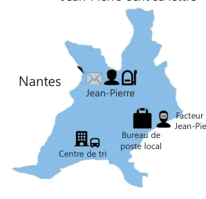

Page 3
Les étapes de cheminement d’un courrier
- Jean-Pierre de Nantes écrit une lettre à Micheline de Rennes
- Le facteur vient chercher sa lettre
Rennes
| Nantes | Micheline |
Jean-Pierre
Facteur de
| Facteur de | Micheline |
| Jean-Pierre | Centre de tri |
| Bureau de | Bureau de |
| poste local | poste local |
Centre de tri
Les étapes de cheminement d’un courrier
- Jean-Pierre de Nantes écrit une lettre à Micheline de Rennes
- Le facteur donne la lettre au bureau de poste local de Jean-Pierre
| Facteur de | Rennes |
| Nantes | Micheline |
Jean-Pierre
Facteur de Micheline
Centre de tri
| Bureau de | Bureau de |
| poste local | poste local |

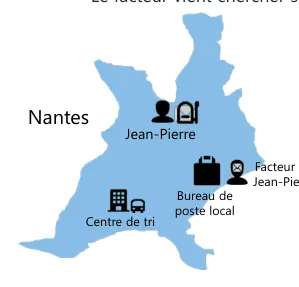

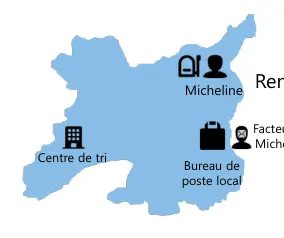

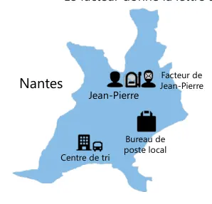

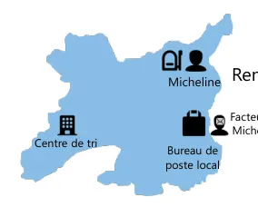
Page 4
Les étapes de cheminement d’un courrier
- Jean-Pierre de Nantes écrit une lettre à Micheline de Rennes
- Le bureau de poste envoie la lettre au centre de tri de Nantes
Rennes
| Nantes | Micheline |
Jean-Pierre
Facteur de
| Facteur de | Micheline |
| Jean-Pierre | Centre de tri |
| Bureau de | Bureau de |
| poste local | poste local |
Centre de tri
Les étapes de cheminement d’un courrier
- Jean-Pierre de Nantes écrit une lettre à Micheline de Rennes
- Le centre de tri de Nantes l’envoie au centre de tri de Rennes
Rennes
| Nantes | Micheline |
Jean-Pierre
Facteur de
| Facteur de | Micheline |
| Jean-Pierre | Centre de tri |
| Bureau de | Bureau de |
| poste local | poste local |
Centre de tri

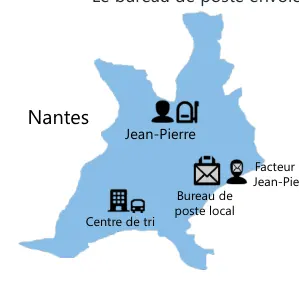


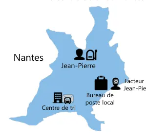

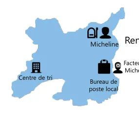
Page 5
Les étapes de cheminement d’un courrier
- Jean-Pierre de Nantes écrit une lettre à Micheline de Rennes
- Le centre de tri de Rennes l’envoie au bureau de poste local de Micheline
Rennes
| Nantes | Micheline |
Jean-Pierre
Facteur de
| Facteur de | Micheline |
| Jean-Pierre | Centre de tri |
| Bureau de | Bureau de |
| poste local | poste local |
Centre de tri
Les étapes de cheminement d’un courrier
- Jean-Pierre de Nantes écrit une lettre à Micheline de Rennes
- Le facteur de Micheline donne la lettre à Micheline
Rennes
| Nantes | Micheline |
Jean-Pierre
Facteur de
| Facteur de | Micheline |
| Jean-Pierre | Centre de tri |
| Bureau de | Bureau de |
| poste local | poste local |
Centre de tri


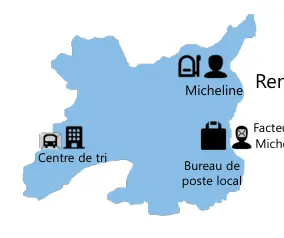


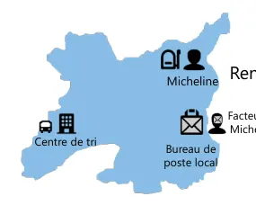
Page 6
Les étapes de cheminement d’un courrier
- Jean-Pierre de Nantes écrit une lettre à Micheline de Rennes
- Micheline prend le courrier dans sa boîte aux lettres puis lit la lettre de Jean-Pierre
Rennes
| Nantes | Micheline |
Jean-Pierre
Facteur de
| Facteur de | Micheline |
| Jean-Pierre | Centre de tri |
| Bureau de | Bureau de |
| poste local | poste local |
Centre de tri
Exploiter Outlook et savoir le dépanner
Cheminement d’un mail


Page 7
Les étapes de cheminement d’un mail
- Jean-Pierre de Nantes écrit un courriel à Micheline de Rennes
- Jean-Pierre écrit un email sur son logiciel (Outlook, Thunderbird, etc.)
Internet
| SMTP | SMTP |
Bonjour Micheline,
| réunion mercredi | Serveur de |
| de 15h à 16h | Serveur de |
messagerie de
messagerie de
| Jean-Pierre | Micheline |
Les étapes de cheminement d’un mail
- Jean-Pierre de Nantes écrit un courriel à Micheline de Rennes
- Le serveur de messagerie de Jean-Pierre vient chercher l’email dans la boîte d’envoi du logiciel (protocole soumission SMTP) et fait une copie dans les éléments envoyés
Internet
| SMTP | SMTP |
Bonjour Micheline, réunion mercredi
| de 15h à 16h | Serveur de | Serveur de |
| messagerie de | messagerie | |
| Soumission SMTP | Jean-Pierre | de Micheline |
Page 8
Les étapes de cheminement d’un mail
- Jean-Pierre de Nantes écrit un courriel à Micheline de Rennes
- Le serveur de messagerie de Jean-Pierre envoie le mail au serveur de messagerie de Micheline (protocole SMTP)
Internet
| SMTP | SMTP |
Serveur de messagerie de
| SMTP | Serveur de |
Jean-Pierre
messagerie de Micheline
Les étapes de cheminement d’un mail
- Jean-Pierre de Nantes écrit un courriel à Micheline de Rennes
- Le client de messagerie de Micheline peut télécharger ses mails dans sa boîte de réception depuis son serveur de messagerie (protocole IMAP ou POP ou ActiveSync ou HTTPS ou MAPI, etc.)
Internet
| SMTP | SMTP |
Bonjour Micheline, réunion mercredi
| Serveur de | POP, IMAP, HTTPS, | de 15h à 16h |
Serveur de
| messagerie de | ActiveSync |
messagerie de
Micheline
Jean-Pierre
Page 9
Exploiter Outlook et savoir le dépanner
Prérequis pour
l’exploitation réseau
Ports et protocoles
- Tous les ports nécessaires doivent être ouverts sur le pare-feu
| Protocole | Port non sécurisé | Port TLS/SSL |
| HTTP Hypertext Transfer Protocol | 80 | 443 |
| POP3 Post Office Protocol | 110 | 995 |
| IMAP4 Interactive Message Access | 143 | 993 |
Protocol
| SMTP Simple Mail Transfer Protocol | 25 | |
| Soumission client SMTP | 2525 | 587 ou 2525 |
(465 déprécié)

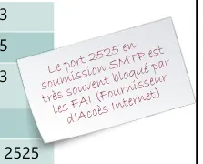
Page 10
Exploiter Outlook et savoir le dépanner
Installation
Installer Outlook depuis Microsoft 365
- Se connecter à https://portal.office.com
Valider votre adresse de récupération
micheline@campus-eni.fr
785245

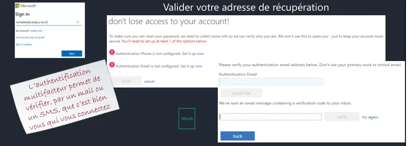
Page 11
Installer Outlook depuis Microsoft 365
- Paramétrer son compte
Exploiter Outlook et savoir le dépanner
Autodiscover

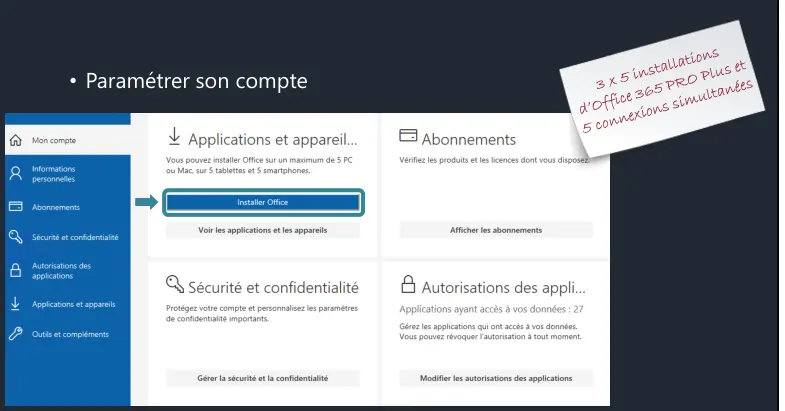
Page 12
Définition
- C’est l’autoconfiguration de votre Outlook avec un serveur de messagerie en renseignant votre adresse mail.
- Découverte automatique à partir d’Outlook 2007 et le client Skype for business.
Processus de la découverte automatique
- L'utilisateur entre son adresse mail à l'ouverture d'Outlook
- Outlook cherche puis se connecte au serveur de messagerie de l’utilisateur
- Le client envoie son adresse SMTP pour avoir les options de configuration de cette adresse
- Un fichier .xml est téléchargé par le client avec les paramètres du serveur
- Outlook se connecte au serveur Exchange Online dans Microsoft 365 et peut recevoir ses mails
Internet
SMTP web.xml
| Micheline@campus-eni.fr | POP, IMAP, HTTPS, MAPI |
Serveur de messagerie de Micheline
Page 13
Test Autodiscover
- CTRL + clic droit sur l’icône Outlook dans la zone de notification pour afficher les menus État de la connexion et Tester la configuration automatique de la messagerie
| Sans CTRL + clic droit sur l’icône Outlook | Avec CTRL + clic droit sur l’icône Outlook |
| dans la zone de notification | dans la zone de notification |
- Test de la configuration automatique de la messagerie micheline@campus-eni.fr
| Sans CTRL + clic droit sur l’icône Outlook | Avec CTRL + clic droit sur l’icône Outlook |
| dans la zone de notification | dans la zone de notification |

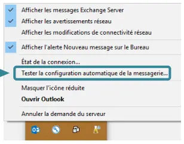

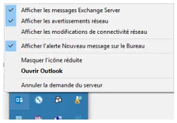

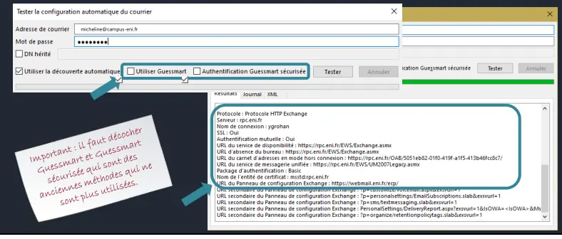
Page 14
- Code retour HTTP du test
| • 1xx | Information |
| • 2xx | Succès |
| • 3xx | Redirection |
| • 4xx | Erreur du client |
| • 5xx | Erreur du serveur |
Exploiter Outlook et savoir le dépanner
Présentation d’Outlook


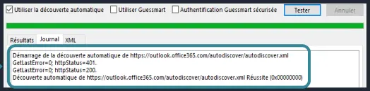
Page 15
Versions Outlook
| Outlook 365 | Outlook Online | Outlook 2019 |
| • À installer sur votre PC | • Accessible depuis un navigateur | • À installer sur votre PC |
| • Disponible hors connexion (fichier .ost) | • Nécessite une connexion Internet | • Disponible hors connexion (fichier .ost) |
| • Payant avec l’offre Office de Microsoft 365 | • Ne gère pas de contact externe à | • Payant avec l’offre pack Office |
Microsoft tel que Gmail ou Yahoo!
| • Nécessite des mises à jour de | • Nécessite des mises à jour de sécurité |
| fonctionnalité et de sécurité | • Ne prend pas en charge de compte |
- À toutes les fonctionnalités disponibles
IMAP
pour sa version
- À toutes les fonctionnalités disponibles
Utiliser Outlook
Outlook
- Microsoft Outlook permet de gérer :
- Sa messagerie électronique
- Ses rendez-vous
- Ses réunions
- Ses contacts
- Ses tâches

Page 16
L’interface Outlook
La barre de titre Le ruban
volet calendrier
Les volets
volet de lecture
Le volet des dossiers
volet contacts volet des tâches
La barre de navigation des dossiers
Exploiter Outlook et savoir le dépanner
Messagerie Outlook

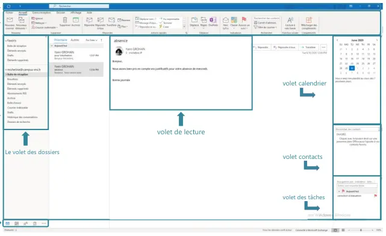
Page 17
Outlook aujourd’hui
- Affiche les rendez-vous, le nombre de messages reçus et la liste des tâches
L’affichage en conversions
- Regroupe plusieurs messages avec le même objet dans une conversation unique
Jean Pierre
Activer le mode conversation
Jean Pierre

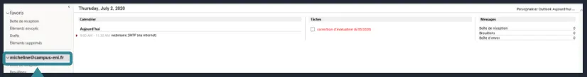

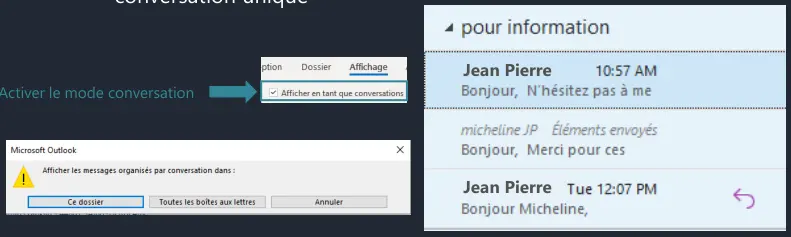
Page 18
Réponse automatique
- Envoie un message ou une alerte aux utilisateurs qui essayent de vous joindre pendant une absence
La barre d’infos-courrier et message d’absence
- Donne des informations sur la disponibilité de chaque destinataire lors de la création d’un mail
Jpierre@campus-eni.fr


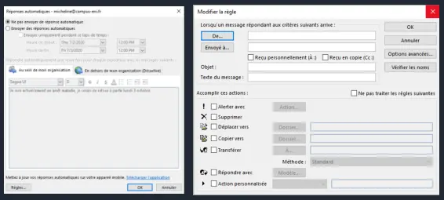

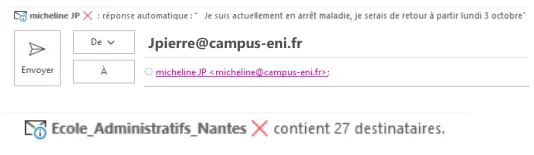
Page 19
Règle de gestion des messages
- Crée des règles pour gérer, ranger, prioriser… vos messages
| Condition | Action | Exception |
Rappel de message
- Rappel d’un message non lu en cochant l’option Supprimer les copies non lues de ce message
- Remplacer un message non lu en cochant l’option Supprimer les copies non lues et les remplacer par un nouveau message

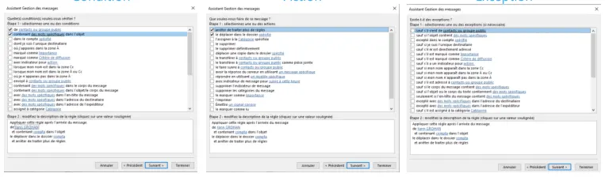

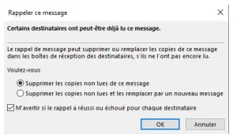

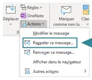
Page 20
Exploiter Outlook et savoir le dépanner
Calendrier
Rendez-vous, réunion, événement
- Un rendez-vous
- Bloque une plage horaire dans votre calendrier
- Une réunion
- Demande d’inviter des utilisateurs et des ressources (salles, matériels…)
- Un événement
- Ne bloque pas de temps sur le calendrier et dure au minimum la journée entière

Page 21
Groupes de calendriers
- Créer un ou plusieurs groupes de calendriers afin d’afficher plusieurs calendriers en même temps
- Fusionner plusieurs calendriers dans le même affichage
Les tâches
- Planification d’actions à mener que vous vous êtes ou que l’on vous a attribuées sur votre calendrier
- Possibilité de prioriser et d’effectuer un suivi

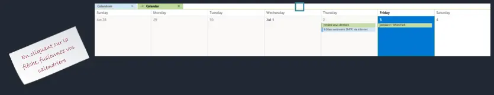

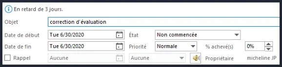
Page 22
Exploiter Outlook et savoir le dépanner
Autres éléments
Les éléments et les catégories
- Un élément d’Outlook, c’est : un message, un rendez-vous, une tâche, une réunion…
- Une catégorie : classer, prioriser vos éléments
- Avec les règles de gestion des messages : affectation automatiquement d’une catégorie suivant certaine(s) condition(s)
Affecter une catégorie congés

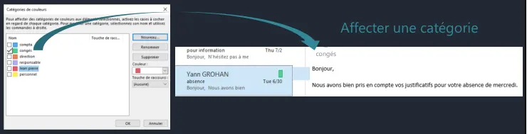
Page 23
L’archivage
- Lorsque la taille de votre boîte aux lettres devient trop importante, il devient nécessaire de déplacer ces messages dans une boîte aux lettres d’archivage
- Utilisation de l’archivage automatique
Quelques raccourcis clavier
| Fermer une fenêtre ou un menu | Échap |
| Accédez à l’onglet Accueil | Alt + H |
| Créer un message | Ctrl + Maj + M |
| Envoyer un message | Alt + S |
| Insérer un fichier | Alt + N, A, F |
| Nouvelle tâche | Ctrl + Maj + K |
| Supprimer un élément (lorsqu’un message, une tâche ou une réunion est sélectionné) | Supprimer |
| Rechercher un élément | Ctrl + E ou F3 |
| Répondre à un courrier | Alt + H, R, P |
| Transférer un courrier | Alt + H, F, W |
| Sélectionnez l’option répondre à tous | Alt + H, R, A |
| Accédez à l’onglet Envoyer/recevoir | Alt + J, S |
| Accédez au calendrier | Ctrl + 2 |
| Créer un rendez-vous | Ctrl + Maj + A |
| Ouvrir la boîte de dialogue Enregistrer sous dans l’onglet pièces jointes | Alt + J, A, A, V |
| Vérifier l’arrivée de nouveaux courriers | Ctrl + M ou F9 |
Source : https://support.microsoft.com/fr-fr/office/raccourcis-clavier-pour-outlook-3cdeb221-7ae5-4c1d-8c1d-9e63216c1efd

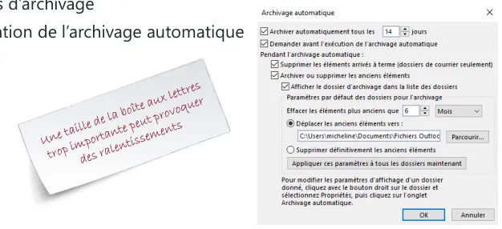
Page 24
Exploiter Outlook et savoir le dépanner
Utilisation d’Outlook
Démo
Paramétrage d’Outlook
Exploiter Outlook et savoir le dépanner
TP
Démo
Utilisation et paramétrage
Page 25
Exploiter Outlook et savoir le dépanner
Dépanner Outlook
Test distant pour votre infrastructure Microsoft 365
- Teste les accès externes de votre infrastructure Exchange
https://testconnectivity.microsoft.com/

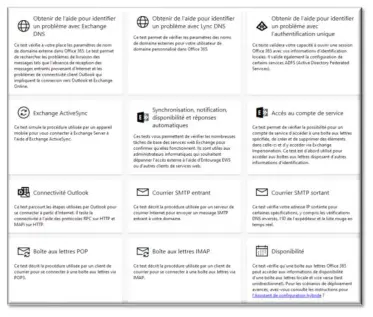
Page 26
Validation du login/Password avec Outlook online
Activer la journalisation
- La journalisation d’Outlook récupère des informations sur les erreurs de connexion
| 1 | 3 |
2
4

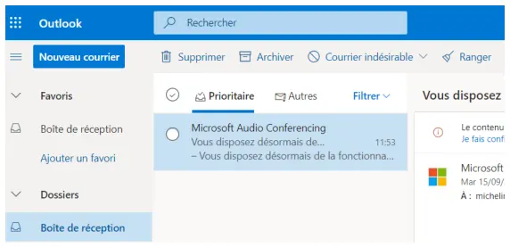

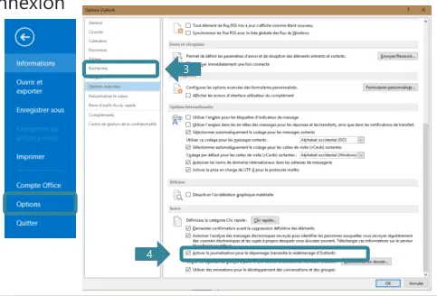
Page 27
C:\Users\micheline\AppData\Local\Temp\Journalisation d’Outlook
Mode hors connexion
- Permet de diagnostiquer d’éventuels problèmes de performance réseau et de proposer une solution viable en cas de coupure réseau

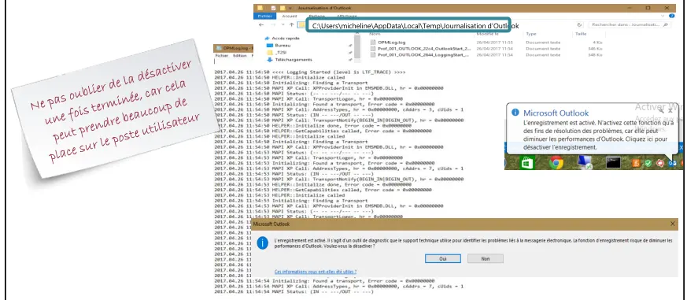

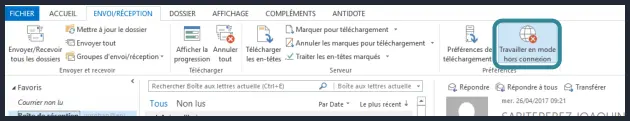

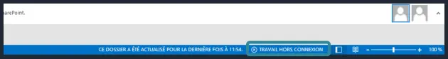
Page 28
Mode sans échec
- Le mode sans échec permet de réparer certains démarrages d’Outlook et de démarrer le client sans les modules complémentaires
Modules complémentaires
- Désactiver les modules inutiles ou trop gourmands en ressource permet d’améliorer les performances d’Outlook

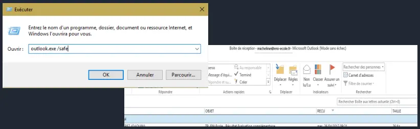

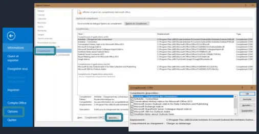
Page 29
État de la connexion Outlook
micheine@eni-ecole.fr micheline.JP@campus-eni.fr micheline@campus-eni.fr
| CTRL + clic droit sur l’icône | micheline.JP@campus-eni.fr |
micheline@eni-ecole.fr
| Outlook | micheline@eni-ecole.fr |
micheline.JP@campus-eni.fr compta@campus-eni.fr
| dans la zone de notification | micheline@campus-eni.fr |
micheline.JP@campus-eni.fr micheline@campus-eni.fr compta@campus-eni.fr
Refaire un profil
- En cas de problème sur Outlook, il est possible de recréer un profil avec l’Autodiscover pour la
1
configuration automatique.
2
3
1. Supprimer le profil avec Outlook fermé 2. Ouvrir Outlook pour un Autodiscover

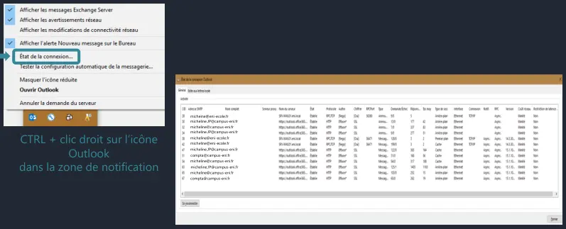

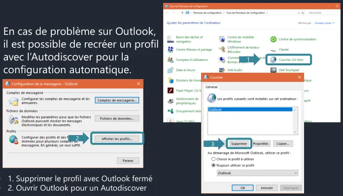
Page 30
Paramètres du compte
- Contient les fichiers de configuration de chaque compte Outlook micheline@eni-ecole.fr
micheline@eni-ecole.fr micheline.JP@campus-eni.fr micheline@campus-eni.fr compta@campus-eni.fr micheline@eni-ecole.fr\Boîte de réception
C:\Users\...\Outlook\micheline@eni-ecole.fr.ost
Les extensions .pst et .ost
- .pst « Personal Storage Table » : fichier contenant les messages de certains logiciels Microsoft
- .ost « Offline Storage Table » : fichier contenant vos données lorsque vous êtes hors connexion
- Les messages, le calendrier et les autres éléments sont stockés sur le serveur Exchange
- Sans Exchange Server (POP3, IMAP4…), les messages, calendriers et autres éléments sont stockés localement dans un fichier .pst

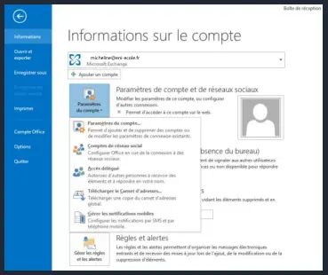

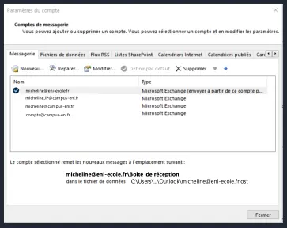

Page 31
Limites d’Outlook
- Les limites des fichiers .ost ou .pst
- MaxFileSize : 50 Go
- Taille maximale absolue que peuvent atteindre les fichiers .pst et .ost.
- WarnFileSize : 47,5 Go
- Quantité maximale de données que les fichiers .pst et .ost peuvent contenir, mais des processus internes peuvent encore écrire dans ces fichiers
Contrôle des fichiers ost/pst
- Outil de réparation SCANPST.EXE pour analyser les erreurs dans le fichier de données et les corriger
| Microsoft\Outlook\micheline@eni-ecole.fr.ost | C:\Users\micheline\AppData\Local\Microsoft\Outlook\micheline@eni- |
ecole.fr.ost D:\backup\outlook\micheline@eni-ecole.fr.bak
| | (https://support.microsoft.com/fr-fr/kb/272227) |

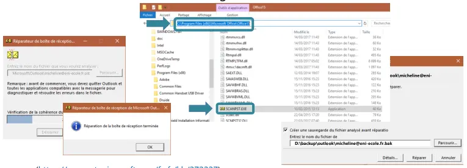
Page 32
- Même chose avec l’outil de réparation MicrosoftEasyFix20101.mini.diagcab pour analyser les erreurs dans le fichier de données et les corriger
Limites d’Outlook
- Problème de performance d’Outlook (https://support.microsoft.com/fr-fr/kb/2768656)

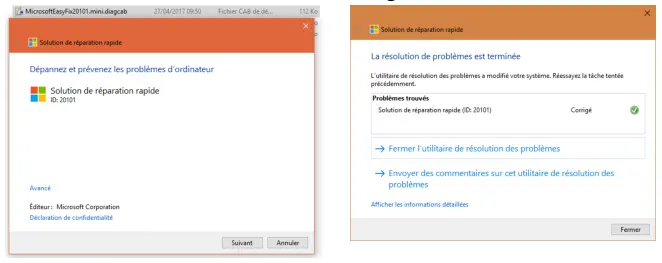

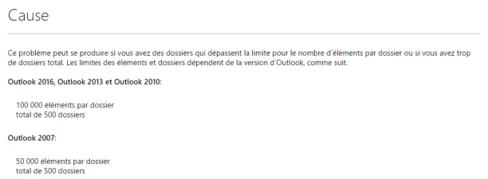
Page 33
- Connaître le nombre d’éléments dans une BAL micheline@eni-ecole.fr
\\micheline@eni-ecole.fr
Outlook Anywhere
- Outlook Anywhere est activé par défaut et donne un accès avec Outlook aux serveurs Exchange Online depuis Internet
- Vous n'avez pas besoin d'utiliser un réseau privé virtuel (VPN) pour accéder à des serveurs Exchange Online depuis Internet
- Vous pouvez tester la connexion avec la commande :
PS>Test-OutlookConnectivity

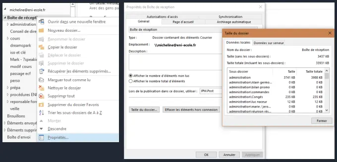
Référence du document : 1brKPwebFWpVHKGBfMEHryg2m5_R7-x00 · SHA-256 1e1b6f635d6593b2…
Énoncé · M4 - Enoncé du TP 1 - Utilisation d'Outlook · 3 pages transcrites
Page 1
Utilisation d’Outlook
Énoncé
TP du Module 04 – Exploiter Outlook et savoir le dépanner Avant de démarrer ce TP, il convient d’avoir suivi les vidéos des modules 1 à 4 et d’avoir réalisé les TP proposés.
Durée estimée 60 minutes
Objectifs Connaître l’utilisation et le paramétrage d’Outlook.
Prérequis Avoir installé Office Principales tâches à réaliser
| • | Ouvrez Outlook et connectez-vous avec votre adresse mail campus-eni.fr afin d’utiliser |
l’autodiscover.
| • | Connectez-vous à votre tenant puis notez le nom de l’appareil sur lequel est installé |
votre office et comparer avec le nom de la machine ENI.
| • | Relevez le lieu et l’adresse IP de votre dernière connexion. |
Page 2
| • | Testez l’autodiscover par le menu de la zone de notification et notez les protocoles |
utilisés et le code HTTP reçu.
| • | Affichez votre « Outlook aujourd’hui ». |
| • | Ajoutez « Répondre à tous », « Transférer », « Eliminer les éléments supprimés » et « |
Nouvelle tâche » à votre ruban.
| • | Créez une règle de réponse automatique pour les messages en dehors de votre |
organisation avec comme texte : « je suis actuellement en congés. Je serais de nouveau disponible à partir du (2 jours plus tard) dès 8h00.
| • | Tester en envoyant un mail depuis une autre adresse mail vers votre mail compus-eni.fr. |
| • | Créez une règle qui répond à ces critères : |
o À partir du message de retour de la réponse automatique. o Contenant des mots spécifiques dans le corps du message « réponse automatique » o Le déplacer dans le dossier « réponse congés » o L’assigner à la catégorie verte nommée « réponse auto » o Nommez votre règle « mon mail perso » o Exécuter cette règle sur les messages déjà présents dans Boîte de réception o Afin de tester votre règle, vérifiez que le mail reçu de réponse automatique a bien vu cette règle s’appliquer et envoyez-vous un mail avec réponse automatique dans le corps de votre message.
| • | Ajoutez le complément web Emojis à votre Outlook. |
| • | Créez une signature pour vos mails (nouveaux messages et réponses) avec : |
o Cordialement, o Une ligne vide de séparation o Votre nom et votre prénom o Votre adresse
| • | Faites de même dans Outlook sur le web. |
| • | Afficher les 3 volets Calendrier, Contacts et Tâches à droite de la page Outlook. |
| • | Afficher les messages en mode Conversation pour toute votre boîte aux lettres. |
| • | Créez une réunion Teams avec votre mail campus-eni.fr vers une autre adresse mail. |
o Pouvez-vous y accéder avec votre autre adresse mail ?
| • | Envoyez un courriel vers une autre adresse mail et rappelez-le. |
| • | Affichez le calendrier des jours fériés puis fusionnez-le avec votre calendrier. |
Page 3
| • | Créez-vous une tâche qui a commencé lundi et qui finit vendredi, que vous appelez |
“cours Office 365”. o Priorité haute o Statut “en cours de réalisation” o 70% de pourcentage d’achèvement.
| • | Envoyez un message de votre compte campus-eni.fr vers votre tenant et transformez-le |
en rendez-vous.
Bonus
| • | Envoyez-vous un sondage avec Forms : |
o Question : le lever de soleil est-il ? o Réponse 1 : beau ? o Réponse 2 : magnifique ?
Référence du document : 1SVnmjQ-xINnbUE5xwAKV8yHI0qJMduAH · SHA-256 c2f50f0a3db45fb1…
Énoncé · M4 - Enoncé du TP 2 - Dépanner Outlook · 1 pages transcrites
Page 1
Dépanner Outlook
Énoncé
TP du Module 04 – Exploiter Outlook et savoir le dépanner Avant de démarrer ce TP, il convient d’avoir suivi les vidéos des modules 1 à 4 et d’avoir réalisé les TP proposés.
Durée estimée 60 minutes
Objectifs Connaître les différentes méthodes afin de faire un diagnostic sur des problèmes liés à Outlook.
Prérequis
| • | Avoir installé Office 365 |
| • | Avoir réalisé le TP précédent sur l’utilisation d’Outlook. |
| • | Allez à cette URL : https://testconnectivity.microsoft.com afin de tester les accès à votre |
Outlook.
| • | Activez la journalisation Outlook. |
| • | Ouvrez Outlook en mode sans échec. |
o Avez-vous toujours accès aux émojis lors d’envoi de mail ?
| • | Faites un test de l’état de la connexion et notez votre MailboxId. |
| • | Refaites votre profil Outlook. |
o Retrouvez-vous :
| ▪ | Tous vos mails ? |
| ▪ | Votre calendrier ? |
| ▪ | Vos tâches ? |
| ▪ | Les émojis à la création d’un mail ? |
| • | Trouvez l’emplacement du fichier des données. |
| • | Utilisez l’outil scanpst.exe afin de vérifier l’intégrité de vos fichiers de données. |
| • | Relevez le nombre d’éléments de votre boîte de réception. |
Référence du document : 1_J3phPHNl-0RMWp6kqFv-Z2ZlV7FLJh0 · SHA-256 809dd19cee45c7c7…
Correction · M4 - Solution du TP 1 - Utilisation d'Outlook · 13 pages transcrites
Correction originale : à consulter après avoir tenté l’exercice.
Page 1
Utilisation d’Outlook
Solution
TP du Module 04 – Exploiter Outlook et savoir le dépanner Avant de démarrer ce TP, il convient d’avoir suivi les vidéos des modules 1 à 4 et d’avoir réalisé les TP proposés. En fonction des informations qui vous ont été fournies, connectez-vous à la machine de l’ENI.
| • | Ouvrez | Outlook | et | connectez-vous | avec | votre | adresse campus-eni.fr | : |
micheline.d@10durand2020.onmicrosoft.com afin d’utiliser l’autodiscover.
Lancez Outlook dans vos applications. Cette fenêtre s’ouvre ; renseignez votre adresse puis cliquez sur connexion. Un code vérification vous est envoyé par SMS.
Vérifiez puis cliquez sur terminer. Une fenêtre de connexion permettant d’activer Office doit s’ouvrir ; il suffit de renseigner vos identifiants.
| • | Connectez-vous à Microsoft 365 avec votre navigateur puis notez le nom de l’appareil |

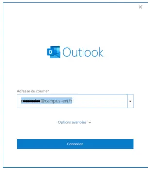
Page 2
sur lequel est installé votre Office et comparer avec le nom de la machine ENI. Connectez-vous à http://portal.office.com puis dans Mon compte Appareil, relevez le nom de l’appareil. Ouvrez une console cmd puis tapez hostname.

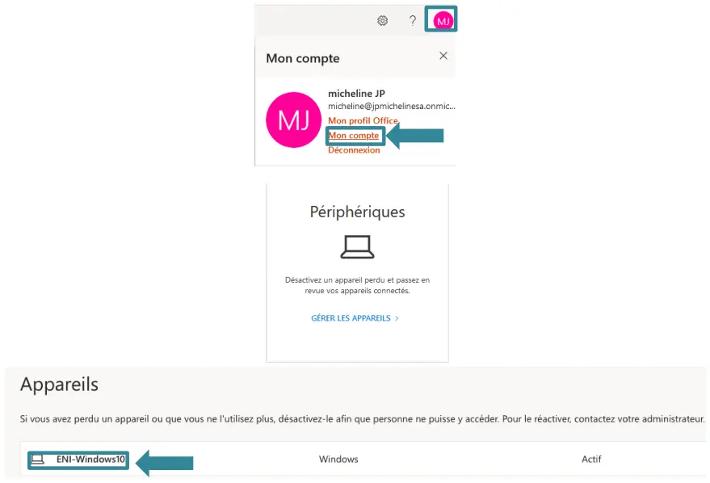

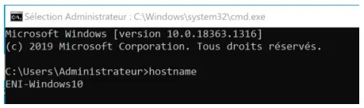
Page 3
| • | Relevez le lieu de votre dernière connexion et relevez l’adresse IP. |
Dans la partie connexion de “Mon compte”, relevez le lieu et l’adresse IP.
| • | Avec Outlook, testez l’autodiscover par le menu de la zone de notification et notez les |
protocoles utilisés et le code HTTP reçu. Application Outlook ouverte, faites CTRL + clic droit sur l’icône Outlook puis testez la configuration automatique. Renseignez l’adresse mail si ce n’est déjà fait, décochez Utiliser Gessmart et Authentification Guessmart sécurisée puis cliquez sur Tester.
Protocoles MAPI HTTP et HTTP.

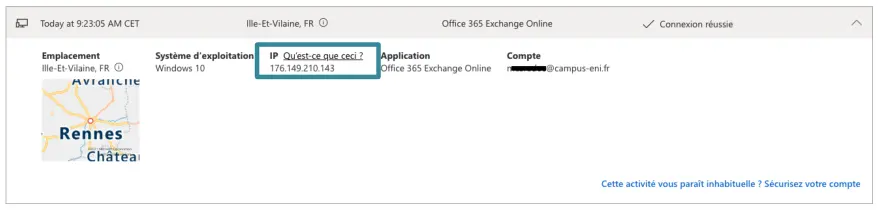

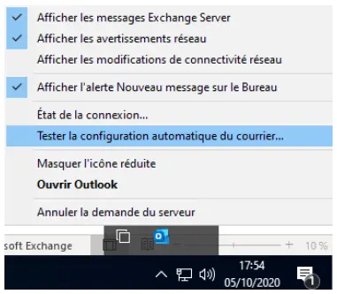


Page 4
Le premier est en 401 car l’autodiscover teste plusieurs URL. Le premier code est donc normal. Le deuxième code est 200 ce qui indique un succès.
| • | Affichez votre « Outlook aujourd’hui ». |
Cliquez sur votre boîte mail.
| • | Ajoutez « Répondre à tous », « Transférer », « Eliminer les éléments supprimés » et |
« Nouvelle tâche » à votre ruban. Cliquez sur la flèche vers le bas du ruban et cochez les options demandées puis sur Autres commandes pour ajouter « Nouvelle tâche ».


Page 5
| • | Créez une règle de réponse automatique pour les messages en dehors de votre |
organisation avec comme texte : « Je suis actuellement en congés. Je serais de nouveau disponible à partir du (2 jours plus tard) dès 8h00. Testez en envoyant un mail depuis votre mail compus-eni.fr vers votre compte de tenant. Cliquez sur Fichier puis « Réponses automatiques ».
| • | Créez une règle qui répond à ces critères : |
o À partir du message de retour de la réponse automatique. o Contenant des mots spécifiques dans le corps du message « réponse automatique » o Le déplacer dans le dossier « réponse congés » o L’assigner à la catégorie verte nommée « réponse auto » o Nommez votre règle « mon mail perso » o Exécuter cette règle sur les messages déjà présents dans Boite de réception
Afin de tester votre règle, vérifiez que le mail reçu de réponse automatique a bien vu cette règle s’appliquer et envoyez-vous un mail avec réponse automatique dans le corps de votre message. Créez un dossier dans votre boîte de réception nommé « réponse congés », renommez la catégorie verte « réponse auto ». Faites un clic droit sur le message reçu de la réponse automatique puis Règle Créer une règle.

Page 6


Page 7
| • | Ajoutez le complément web Emojis à votre Outlook. |
Cliquez sur Fichier puis sur Gérer les compléments. Une fenêtre avec Outlook Online s’ouvre et affiche les compléments disponibles. Installez Emojis, redémarrez Outlook et vérifiez dans un nouveau message.
| • | Créez une signature pour vos mails (nouveaux messages et réponses) avec : |
o Cordialement, o Une ligne vide de séparation o Votre nom et votre prénom o Votre adresse


Page 8
Faites de même dans Outlook sur le web. Cliquez sur Fichier Options Courrier puis Signatures. Dans Outlook sur le web, cliquez sur Paramètres Afficher tous les paramètres d’Outlook
| • | Afficher les 3 volets Calendrier, Contacts et Tâches à droite de la page Outlook. |
Dans le menu Affichage Barre des tâches, cochez les 3 options.


Page 9
| • | Afficher les messages en mode conversation pour toute votre boîte aux lettres. |
Sélectionnez Boîte de réception puis dans le menu Affichage cliquez sur Afficher en tant que conversation à appliquer à toutes les boîtes aux lettres.
| • | Créez une réunion Teams avec votre compte campus-eni.fr et une autre adresse mail. |
Pouvez-vous y accéder avec votre adresse mail ? Dans le menu calendrier, cliquez sur Nouvelle réunion Teams. Votre compte campus-eni.fr doit pouvoir y accéder.


Page 10
| • | Envoyez un courriel vers une autre adresse mail et rappelez-le. |
Ouvrez le message dans les éléments envoyés puis Action et enfin Rappeler ce message.


Page 11
| • | Affichez le calendrier des jours fériés puis fusionnez-le avec votre calendrier. |
Dans le menu Calendrier, affichez les jours fériés puis cliquez sur la flèche afin de fusionner les deux calendriers.
Magnifique ?
| • | Créez une tâche qui a commencé lundi et qui finit vendredi que vous appellerez “cours |
Office 365”. Mettez-la en priorité haute avec le statut “en cours de réalisation” et à 70% de pourcentage d’achèvement. Dans le menu des tâches, créez une nouvelle tâche avec les indications ci-dessus.


Page 12
| • | Envoyez un message de votre compte campus-eni.fr vers votre tenant et transformez-le |
en rendez-vous. Glissez le message vers le menu calendrier.
BONUS
| • | Envoyez-vous un sondage avec Forms : |
o Question : le lever de soleil est-il ? o Réponse 1 : beau ? o Réponse 2 : de droite ?
Créez un message puis dans Options Utiliser les boutons de votes Sondage

Page 13
D’autres solutions sont possibles pour ce TP. Il n’existe pas une seule façon de faire.

Référence du document : 1hLx2KaavOIFNFhw3AAzvGSO5ZEG0QF8u · SHA-256 ff8b5796103c077e…
Correction · M4 - Solution du TP 2 - Dépanner Outlook · 7 pages transcrites
Correction originale : à consulter après avoir tenté l’exercice.
Page 1
Dépanner Outlook
Solution
TP du Module 04 – Exploiter Outlook et savoir le dépanner Avant de démarrer ce TP, il convient d’avoir suivi les vidéos des modules 1 à 4 et d’avoir réalisé les TP proposés.
Durée estimée 60 minutes
En fonction des informations qui vous ont été fournies, connectez-vous à la machine de l’ENI.
| • | Allez à cette URL : https://testconnectivity.microsoft.com afin de tester les accès à votre |
Outlook. Ouvrez un navigateur et accédez à l’URL. Sélectionnez Office 365 dans le volet gauche puis Connectivité Outlook.

Page 2
Le test doit être réussi.
| • | Activez la journalisation Outlook. |
Allez dans Fichier Options Options avancées
| Redémarrez | Outlook | puis | allez | dans | le | répertoire : |
C:\utilisateurs\votrenom\AppData\Local\Temp\Journalisation d’Outlook.
Ouvrez le fichier avec un NotePad.


Page 3
| • | Ouvrez Outlook en mode sans échec. Avez-vous toujours accès aux émojis lors d’envoi |
de mail ? Faites un clic droit sur le bouton Windows puis Exécuter : « outlook.exe /safe » Choisissez le profil demandé. Faites un nouveau message et constatez que vous n’avez plus les émojis.
| • | Faites un test de l’état de la connexion et notez votre MailboxId. |
Faites un Ctrl + clic droit sur l’icône Outlook dans la barre de notification.


Page 4
Dans « Nom du serveur », vous devriez lire votre MailboxId.
| • | Refaites votre profil Outlook, retrouvez-vous tous vos mails, votre calendrier, vos tâches |
et les emojis à la création d’un mail ? Outlook éteint, allez dans le panneau de configuration puis choisissez Mail (Microsoft Outlook 2016).
Cliquez sur Afficher les profils.
Supprimez le profil puis appliquez.


Page 5
Relancez Outlook et nommez le nouveau profil avec votre prénom. L’autodiscover se lance et reconfigure votre Outlook. Tous vos mails, calendriers et tâches sont re-téléchargés. Le mode émojis est installé depuis Outlook sur le web et doit aussi être présent.
| • | Trouvez l’emplacement du fichier des données. |


Page 6
Allez sur Fichier Informations Paramètres du compte
| • | Utilisez l’outil scanpst.exe afin de vérifier l’intégrité de vos fichiers de données. |
Allez dans le répertoire C:\Programmes\Microsoft Office\root\Office16 Lancez l’application SCANPST.EXE puis faites parcourir vers le fichier : C:\Utilisateurs\votrenom\AppData\Local\Microsoft\Outlook\micheline@10durand2020. onmicrosoft.com – micheline.ost puis réparez.
| • | Relevez le nombre d’éléments de votre boîte de réception. |
Faites un clic droit sur les Propriétés de la boîte de réception puis sur Taille du dossier.


Page 7
D’autres solutions sont possibles pour ce TP. Il n’existe pas une seule façon de faire.

Référence du document : 1Gu2jW9dUuPcDazOd6WENZdA4OJBQ76bR · SHA-256 8d9600957196c512…
Complément IA / externe au cours — fiche pédagogique du portail
Cette fiche contient une reformulation et des aides d’apprentissage rédigées par IA. Elle est distincte de la transcription des documents du Drive et ne la remplace pas. Les schémas de synthèse de cette fiche sont des illustrations IA / externes au cours, sauf les captures explicitement attribuées à un document source.
Séquence : Microsoft 365 — Outils collaboratifs
Rôle dans le parcours : suivre un message de l’expéditeur au destinataire, paramétrer Outlook, puis le dépanner.
Objectifs¶
- Comprendre le cheminement d’un e-mail.
- Connaître l’utilisation des outils de communication asynchrone.
- Paramétrer un logiciel de messagerie.
1. Du courrier papier au courriel¶
Le support suit une lettre de Jean-Pierre, à Nantes, vers Micheline, à Rennes.
- Jean-Pierre écrit la lettre.
- Le facteur vient la chercher.
- Il la remet au bureau de poste local de Jean-Pierre.
- Ce bureau l’envoie au centre de tri de Nantes.
- Le centre de tri de Nantes l’envoie au centre de tri de Rennes.
- Le centre de tri de Rennes l’envoie au bureau de poste local de Micheline.
- Le facteur de Micheline lui remet la lettre.
- Micheline la prend dans sa boîte aux lettres et la lit.
Le même scénario devient un courriel, avec l’exemple « Bonjour Micheline, réunion mercredi de 15 h à 16 h ».
- Jean-Pierre écrit le message dans Outlook, Thunderbird ou un autre logiciel.
- Le serveur de Jean-Pierre va chercher le message dans la boîte d’envoi (soumission SMTP) et en garde une copie dans les éléments envoyés.
- Ce serveur envoie le message au serveur de Micheline (SMTP).
- Le client de Micheline télécharge le message dans la boîte de réception : IMAP, POP, ActiveSync, HTTPS, MAPI, etc.
Illustration IA / externe au cours — les quatre temps du courriel.
2. Ports à ouvrir¶
Tous les ports nécessaires doivent être ouverts sur le pare-feu.
| Protocole | Port non sécurisé | Port TLS/SSL |
|---|---|---|
| HTTP, Hypertext Transfer Protocol | 80 | 443 |
| POP3, Post Office Protocol | 110 | 995 |
| IMAP4, Interactive Message Access Protocol | 143 | 993 |
| SMTP, Simple Mail Transfer Protocol | 25 | — |
| Soumission client SMTP | 2525 | 587 ou 2525 (465 déprécié) |
3. Installer et laisser Autodiscover configurer¶
Se connecter à https://portal.office.com. Le support illustre la validation d’une adresse de récupération, micheline@campus-eni.fr, et un code 785245, puis le paramétrage du compte.
Autodiscover est l’autoconfiguration d’Outlook avec un serveur de messagerie à partir de l’adresse de courriel. Le support la date d’Outlook 2007 et du client Skype for Business.
- L’utilisateur entre son adresse à l’ouverture d’Outlook.
- Outlook cherche le serveur de messagerie et s’y connecte.
- Le client envoie l’adresse SMTP pour obtenir les options de cette adresse.
- Un fichier
.xmlest téléchargé avec les paramètres. - Outlook se connecte à Exchange Online dans Microsoft 365 et peut recevoir les messages.
Test : Ctrl + clic droit sur l’icône Outlook dans la zone de notification. Le menu affiche alors État de la connexion et Tester la configuration automatique de la messagerie. Sans la touche Ctrl, ces commandes n’apparaissent pas. Le support compare les deux menus et montre un test pour micheline@campus-eni.fr.
Codes HTTP du test : 1xx information, 2xx succès, 3xx redirection, 4xx erreur du client, 5xx erreur du serveur.
4. Trois Outlook, une interface¶
| Outlook 365 | Outlook Online | Outlook 2019 | |
|---|---|---|---|
| Installation | Sur le PC | Navigateur | Sur le PC |
| Hors connexion | Fichier .ost |
Connexion Internet nécessaire | Fichier .ost |
| Offre | Payant avec l’offre Office de Microsoft 365 | — | Payant avec le pack Office |
| Limites citées | Mises à jour de fonctionnalité et de sécurité | Ne gère pas de contact externe tel que Gmail ou Yahoo | Ne prend pas en charge de compte IMAP ; mises à jour de sécurité |
| Fonctions | Toutes celles de sa version | — | Toutes celles disponibles pour sa version |
Outlook gère la messagerie, les rendez-vous, les réunions, les contacts et les tâches.
L’interface comprend la barre de titre, le ruban, les volets (calendrier, lecture, contacts, tâches), le volet des dossiers et la barre de navigation des dossiers.
| Fonction | Effet |
|---|---|
| Outlook aujourd’hui | Rendez-vous, nombre de messages reçus, liste des tâches. |
| Affichage en conversations | Regroupe les messages de même objet. |
| Réponse automatique | Message ou alerte pendant une absence. |
| Barre d’infos-courrier | Disponibilité des destinataires à la rédaction. Le support cite Jpierre@campus-eni.fr. |
| Règle | Condition, action, exception : ranger, prioriser, classer. |
| Rappel | Supprimer les copies non lues, ou les supprimer et les remplacer par un nouveau message. |
5. Calendrier, tâches, catégories, archivage¶
| Élément | Définition du support |
|---|---|
| Rendez-vous | Bloque une plage horaire. |
| Réunion | Invite des utilisateurs et des ressources (salles, matériels). |
| Événement | Ne bloque pas de temps et dure au minimum la journée. |
| Groupe de calendriers | Affiche plusieurs calendriers ensemble, ou les fusionne. |
| Tâche | Action à mener, attribuée par soi ou par autrui, avec priorité et suivi. |
| Élément | Message, rendez-vous, tâche, réunion… |
| Catégorie | Classe et priorise. Une règle peut l’affecter selon des conditions. Le support montre la catégorie « congés ». |
Quand la boîte devient trop grande, les messages partent dans une boîte d’archivage, avec l’archivage automatique.
Raccourcis du support¶
Le support renvoie à la page Microsoft des raccourcis Outlook : raccourcis clavier pour Outlook.
| Action | Raccourci |
|---|---|
| Fermer une fenêtre ou un menu | Échap |
| Onglet Accueil | Alt + H |
| Créer un message | Ctrl + Maj + M |
| Envoyer | Alt + S |
| Insérer un fichier | Alt + N, A, F |
| Nouvelle tâche | Ctrl + Maj + K |
| Supprimer l’élément sélectionné | Supprimer |
| Rechercher | Ctrl + E ou F3 |
| Répondre | Alt + H, R, P |
| Transférer | Alt + H, F, W |
| Répondre à tous | Alt + H, R, A |
| Onglet Envoyer/recevoir | Alt + J, S |
| Calendrier | Ctrl + 2 |
| Créer un rendez-vous | Ctrl + Maj + A |
| Enregistrer sous, onglet pièces jointes | Alt + J, A, A, V |
| Vérifier les nouveaux courriers | Ctrl + M ou F9 |
6. Dépanner¶
| Outil | Ce que le support en fait |
|---|---|
| testconnectivity.microsoft.com | Teste les accès externes de l’infrastructure Exchange. |
| Outlook sur le web | Valide le couple identifiant et mot de passe. |
| Journalisation | Récupère les informations sur les erreurs de connexion. Le support montre C:\Users\micheline\AppData\Local\Temp\Journalisation d’Outlook et rappelle de la désactiver ensuite. |
| Mode hors connexion | Diagnostique les performances réseau et propose une solution en cas de coupure. |
| Mode sans échec | Démarre sans les modules complémentaires et peut réparer certains démarrages. |
| Modules complémentaires | Désactiver ceux qui sont inutiles ou trop gourmands. |
| État de la connexion | Ctrl + clic droit sur l’icône. Le support y montre plusieurs adresses, dont micheline@campus-eni.fr, micheline.JP@campus-eni.fr, micheline@eni-ecole.fr et compta@campus-eni.fr. |
| Nouveau profil | Outlook fermé : supprimer le profil, rouvrir, laisser Autodiscover reconfigurer. |
| Paramètres du compte | Fichiers de configuration de chaque compte. |
.pst |
Personal Storage Table. Messages de certains logiciels Microsoft. Sans Exchange (POP3, IMAP4…), messages, calendrier et autres éléments sont dans un .pst local. |
.ost |
Offline Storage Table. Données hors connexion. Avec Exchange, messages, calendrier et autres éléments restent sur le serveur. |
| Taille | MaxFileSize 50 Go, taille maximale absolue. WarnFileSize 47,5 Go : au-delà, des processus internes peuvent encore écrire. |
SCANPST.EXE |
Analyse et corrige le fichier de données. Le support cite aussi MicrosoftEasyFix20101.mini.diagcab et les articles support kb/272227 et kb/2768656. |
| Nombre d’éléments | Propriétés de la boîte, illustrées avec micheline@eni-ecole.fr. |
| Outlook Anywhere | Activé par défaut. Accès Exchange Online depuis Internet sans VPN. Commande citée : Test-OutlookConnectivity. |
Attention
Le support demande de désactiver la journalisation une fois le diagnostic terminé : elle prend beaucoup de place sur le poste.
7. TP 1 — Utilisation d’Outlook¶
Durée : 60 minutes. Vidéos des modules 1 à 4 et TP précédents.
Objectif : utilisation et paramétrage d’Outlook. Prérequis : Office installé.
La correction indique de se connecter à la machine du centre de formation, avec l’exemple micheline.d@10durand2020.onmicrosoft.com. Un code de vérification peut arriver par SMS, puis une fenêtre active Office.
- Ouvrir Outlook et se connecter avec l’adresse
campus-eni.frpour utiliser Autodiscover. - Se connecter au tenant. Noter le nom de l’appareil où Office est installé et le comparer au nom de la machine. La correction ouvre
http://portal.office.com, Mon compte, Appareil, puishostnamedans une console. - Relever le lieu et l’adresse IP de la dernière connexion, dans la partie connexion de Mon compte.
- Tester Autodiscover depuis la zone de notification. Noter les protocoles et le code HTTP. La correction décoche « Utiliser Guessmart » et « Authentification Guessmart sécurisée », puis Tester. Protocoles relevés : MAPI HTTP et HTTP. Le premier code 401 est présenté comme normal, parce que plusieurs URL sont testées. Le second code 200 indique un succès.
- Afficher Outlook aujourd’hui, en cliquant sur la boîte.
- Ajouter au ruban « Répondre à tous », « Transférer », « Éliminer les éléments supprimés » et « Nouvelle tâche » (flèche du ruban, puis Autres commandes pour la tâche).
- Réponse automatique hors de l’organisation : « je suis actuellement en congés. Je serais de nouveau disponible à partir du (2 jours plus tard) dès 8h00. » L’énoncé demande un test depuis une autre adresse vers le mail écrit
compus-eni.fr. La correction passe par Fichier, Réponses automatiques. - Règle « mon mail perso » : à partir du message de retour, corps contenant « réponse automatique », déplacement dans « réponse congés », catégorie verte « réponse auto », exécution aussi sur les messages déjà dans la boîte de réception. Vérifier, puis s’envoyer un message dont le corps contient « réponse automatique ».
- Ajouter le complément web Emojis : Fichier, Gérer les compléments, installer, redémarrer.
- Signature pour les nouveaux messages et les réponses : « Cordialement, », une ligne vide, nom et prénom, adresse. La refaire dans Outlook sur le web (Fichier, Options, Courrier, Signatures ; sur le web : Paramètres, Afficher tous les paramètres d’Outlook).
- Afficher les trois volets Calendrier, Contacts et Tâches : Affichage, Barre des tâches.
- Mode Conversation pour toute la boîte : Affichage, Afficher en tant que conversation, toutes les boîtes.
- Réunion Teams depuis
campus-eni.frvers une autre adresse. La correction demande si l’autre adresse peut y accéder, via Calendrier, Nouvelle réunion Teams. - Envoyer un courriel et le rappeler : Éléments envoyés, Action, Rappeler ce message.
- Afficher le calendrier des jours fériés et le fusionner avec le calendrier.
- Tâche « cours Office 365 », du lundi au vendredi, priorité haute, statut « en cours de réalisation », achèvement 70 %.
- Envoyer un message du compte
campus-eni.frvers le tenant et le transformer en rendez-vous en le glissant vers le calendrier.
Bonus de l’énoncé : sondage Forms, question « le lever de soleil est-il ? », réponses « beau ? » et « magnifique ? ». La correction montre aussi Options, Utiliser les boutons de votes, Sondage, et signale qu’une autre réponse peut être « de droite ? ». Elle conclut qu’il n’existe pas une seule façon de faire.
8. TP 2 — Dépanner Outlook¶
Durée : 60 minutes. Même prérequis de vidéos, plus le TP d’utilisation.
Objectif : connaître les méthodes de diagnostic.
- Ouvrir
https://testconnectivity.microsoft.com. La correction choisit Office 365, puis Connectivité Outlook. Le test doit réussir. - Activer la journalisation : Fichier, Options, Options avancées. Redémarrer. Ouvrir
C:\utilisateurs\votrenom\AppData\Local\Temp\Journalisation d’Outlookavec le Bloc-notes. - Mode sans échec : Exécuter
outlook.exe /safe, choisir le profil. La correction constate que les émojis ne sont plus proposés dans un nouveau message. - État de la connexion : Ctrl + clic droit sur l’icône. Noter le MailboxId, lu dans « Nom du serveur ».
- Refaire le profil, Outlook éteint : Panneau de configuration, Mail (Microsoft Outlook 2016), Afficher les profils, supprimer, appliquer. Relancer, nommer le profil avec le prénom. Autodiscover reconfigure. Mails, calendrier et tâches sont retéléchargés. Les émojis, installés depuis Outlook sur le web, doivent être de nouveau présents.
- Emplacement du fichier de données : Fichier, Informations, Paramètres du compte.
SCANPST.EXEdansC:\Programmes\Microsoft Office\root\Office16. La correction pointe un fichier du typeC:\Utilisateurs\votrenom\AppData\Local\Microsoft\Outlook\micheline@10durand2020.onmicrosoft.com – micheline.ost, puis répare.- Nombre d’éléments de la boîte de réception : clic droit, Propriétés, Taille du dossier.
La correction rappelle qu’une autre méthode reste possible.
Résumé¶
Le courriel reprend le trajet de la lettre : soumission SMTP, SMTP entre serveurs, puis IMAP, POP, ActiveSync, HTTPS ou MAPI. Autodiscover télécharge un XML à partir de l’adresse. Le dépannage va du test de connectivité à la journalisation, au mode sans échec, au profil, puis à .ost / .pst et à SCANPST.EXE.
Mini-quiz¶
- Quel protocole va chercher le message dans la boîte d’envoi ?
- Quel port TLS le support associe-t-il à IMAP4 ?
- Que faut-il maintenir enfoncé pour voir « Tester la configuration automatique » ?
- Que signifie un code HTTP 200 dans le test Autodiscover de la correction ?
- Quelle est la taille maximale absolue d’un
.ostou d’un.pstselon le support ?
Réponses du mini-quiz
- La soumission SMTP.
-
- Le port non sécurisé est 143.
- La touche Ctrl, en plus du clic droit sur l’icône de la zone de notification.
- Un succès. Le 401 précédent est présenté comme normal, car plusieurs URL sont testées.
- MaxFileSize : 50 Go. WarnFileSize est à 47,5 Go.
M04 — Exploiter Outlook et savoir le dépanner
20 questions
Teste tes connaissances sur ce module.